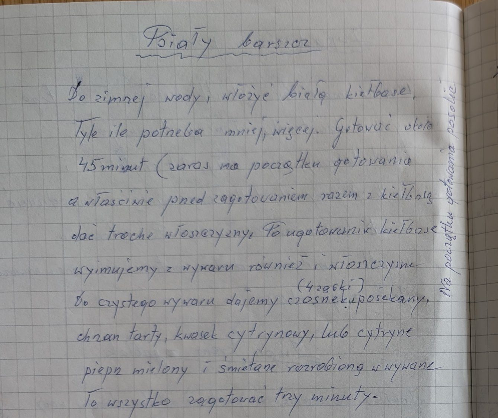

Biały barszcz


Składniki
- biała kiełbasa (ile potrzeba)
- trochę włoszczyzny
- sól
- 4 ząbki czosnku
- chrzan tarty
- kwasek cytrynowy lub cytryna
- pieprz mielony
- śmietana
Przygotowanie
- Białą kiełbasę włożyć do zimnej wody, od razu dodać trochę włoszczyzny i posolić.
- Gotować około 45 minut.
- Kiełbasę i włoszczyznę wyjąć z wywaru.
- Do czystego wywaru dodać posiekany czosnek, tarty chrzan, kwasek cytrynowy lub cytrynę, pieprz i śmietanę rozrobioną w wywarze.
- Zagotować trzy minuty.
Oryginalny zapis
Biały barszcz
Do zimnej wody, włożyć białą kiełbasę.
Tyle ile potrzeba mniej, więcej. Gotować około
45 minut (zaraz na początku gotowania
a właściwie przed zagotowaniem razem z kiełbasą
dać trochę włoszczyzny. Po ugotowaniu kiełbasę
wyjmujemy z wywaru również i włoszczyznę
(4 ząbki)
Do czystego wywaru dajemy czosnek posiekany,
chrzan tarty, kwasek cytrynowy, lub cytrynę
pieprz mielony i śmietanę rozrobioną w wywarze
To wszystko zagotować trzy minuty.
[dopisek pionowo na marginesie: Na początku gotowania posolić]